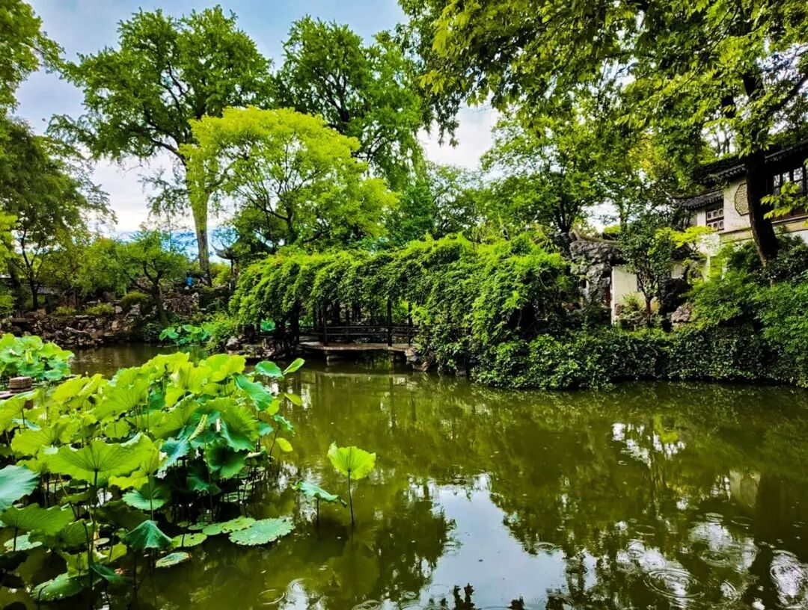
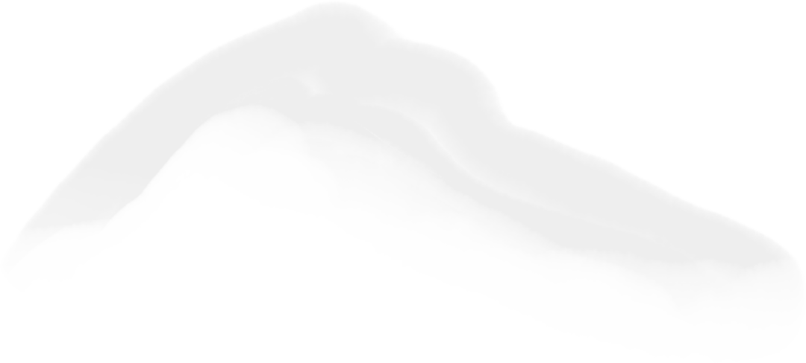
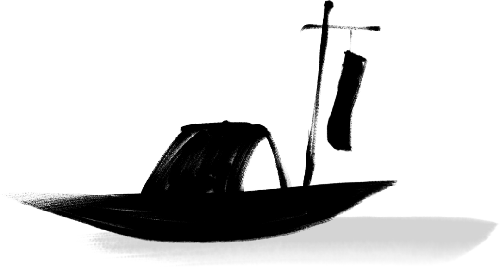

诗意苏州行


诗意苏州行
Three Days

提起苏州，总难绕开那句“上有天堂，下有苏杭”。氤氲雨落，吴侬软语，教人如何不怜、不爱。
苏州是长江三角洲重要的中心城市之一，是国家高新技术产业基地和风景旅游城市，既非省会，也非直辖市或经济特区，却在全国城市GDP榜单上常年与一众声名显赫的城市比肩而立，其综合实力可见一斑。

古/宫/闲/地/少 水/巷/小/桥/多
—记苏州之行
第一天
行者们于6月23日开启本次苏州之旅，抵达目的地后前往中国十大名寺之一的寒山寺：佛像雕塑别具一格，碑刻艺术天下闻名，行者们置身其中，听着辽远的钟声，感受着千年的虔诚。
江/山/如/有/待 花/柳/更/无/私
—记苏州之行
第二天
6月24日游览“天下园林之母”——拙政园，布局雅致别具一格；参观苏州博物馆，馆藏丰富琳琅，叫人不辨古今；在留园恣意徜徉，体会苏州的风土人情，感悟祖国的大好河山，在淅淅小雨中留下自己的足迹。
一/迳/抱/幽/山 居/然/城/市/间
—记苏州之行
第三天

6月25日，漫步苏州的最后一天，行者们在讲解人员的带领下参观了同程旅行大厦，线上线下结合的形式下，更加深大家对互联网文化的了解。在下午来到使人心静神沉的诚品书店，让书香舒缓疲惫、平息烦躁。
明朝即长路，惜取此时心
诗意苏州
游至江南的行者啊，总不免坠入一个叫苏州的梦里：粉墙黛瓦，吴雨迷蒙；园林、小巷、还有那悠悠缓缓的乌篷船，不觉醒、不愿醒。
写意苏州，就此别过，后会有期
来源 丨 行者无疆实践团
文字 丨 杨婧葳
图片 丨 行者无疆实践团
图片 丨 部分来源于网络
排版 丨 王文通
审核 丨 朱华玮 崔雨琪

行者无疆实践团
扫码关注我们
在这个夏季，一起流眄苏杭！